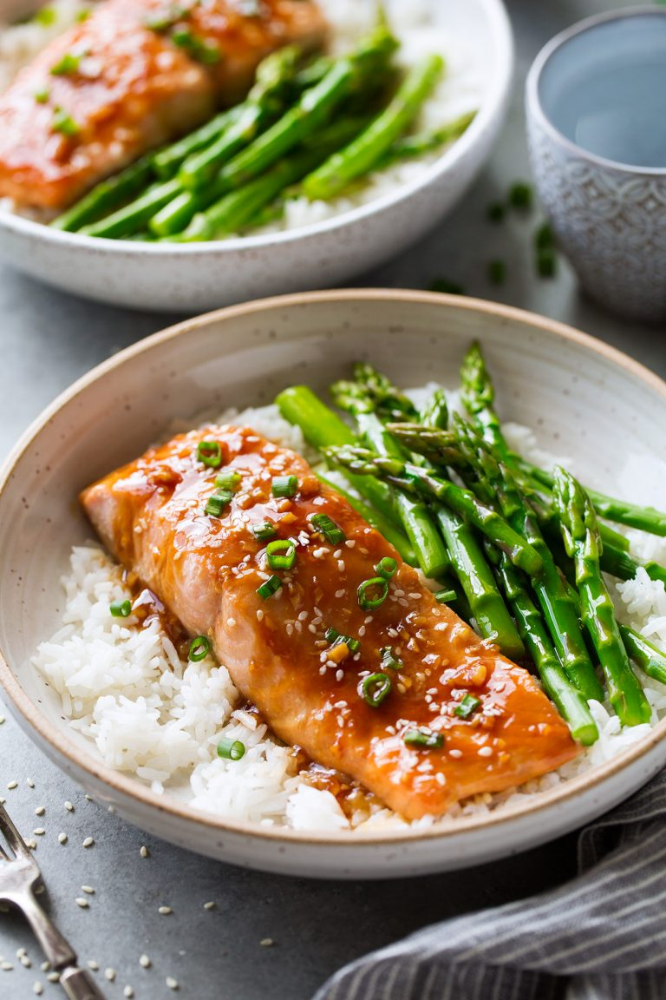

Salmon Teriyaki

Alright y'all, prepare your mouth holes for this one. My girlfriend wanted to make this one day and once I took my very first bite, it blew me away. You can pick any veggies you want, but we decided to go with sauteed zucchini and may I say, Chef's kiss right there. That, mixed with white rice and the teriyaki sauce was simplistic perfection. This is now my absolute favorite dish to be made and it will have you wanting more!
This dish is made for the family or even yourself if you just want to make something fast, that still has flavors to it. This is even perfect if you have picky eaters in the family. This meal will have a Prep Time: of 15 minutes, Cook Time: of 15 minutes, and a Serving: of 4.
Per serving will consist of 340 Calories and 35g of Protein
Ingredients
- 4 (6oz) skinless salmon fillets
- 1 green onion, chopped (optiional)
- 1/2 teaspoon sesame seeds, for serving (optional)
Teriyaki Sauce
- 6 to 8 tablespoons low-sodium soy sauce, depending on how salty you like it
- 8 tablespoons water divided
- 3 tablespoons honey
- 2 tablespoons packed light brown sugar
- 1 tablespoon minced garlic (3 cloves)
- 1 tablespoon minced peeled fresh ginger
- 1 1/2 tablespoon fresh lemon juice
- 1 tablespoon cornstarch
Steps
- Preheat oven to 400 degrees and spray a baking dish* with non-stick cooking spray.
- In a small saucepan whisk together low-sodium soy sauce, 6 Tbsp water, honey, brown sugar, garlic, ginger and lemon juice and bring mixture to a light boil over medium heat.
- Whisk together cornstarch with remaining 2 Tbsp water, then add to sauce mixture in saucepan.
- Let mixture boil, whisking constantly, for 1 minute. Remove from heat and let cool slightly.
- Place salmon in baking dish then pour teriyaki sauce evenly over salmon (I also like to lift the fillets up so the sauce runs right under).
- Bake in preheated oven 12 to 15 minutes until salmon has cooked through (cooked time will vary depending on thickness of salmon).
- Serve warm topped with some of the teriyaki sauce from the baking dish (use excess sauce for steamed asparagus or broccoli on the side) and chopped green onions and sesame seeds.
- *I recommend using a baking dish that's just large enough to fit salmon while leaving a little space between fillets.